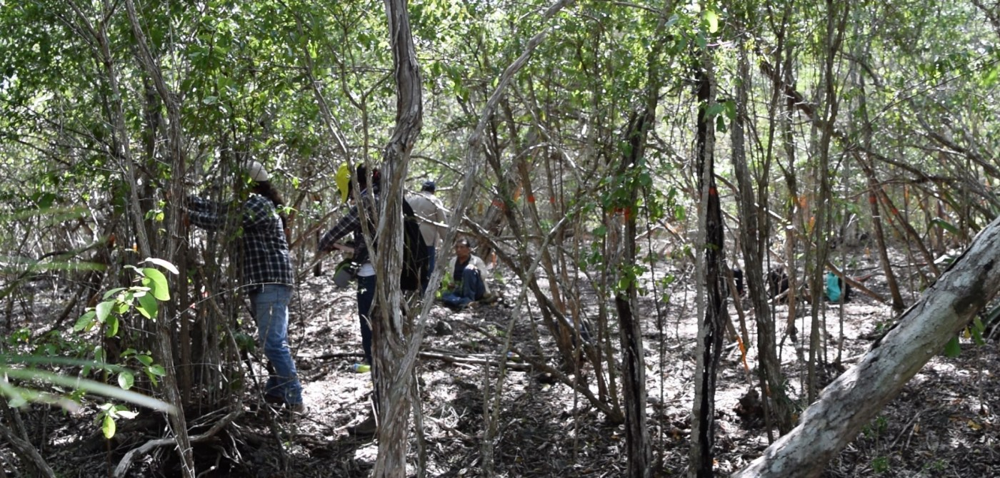
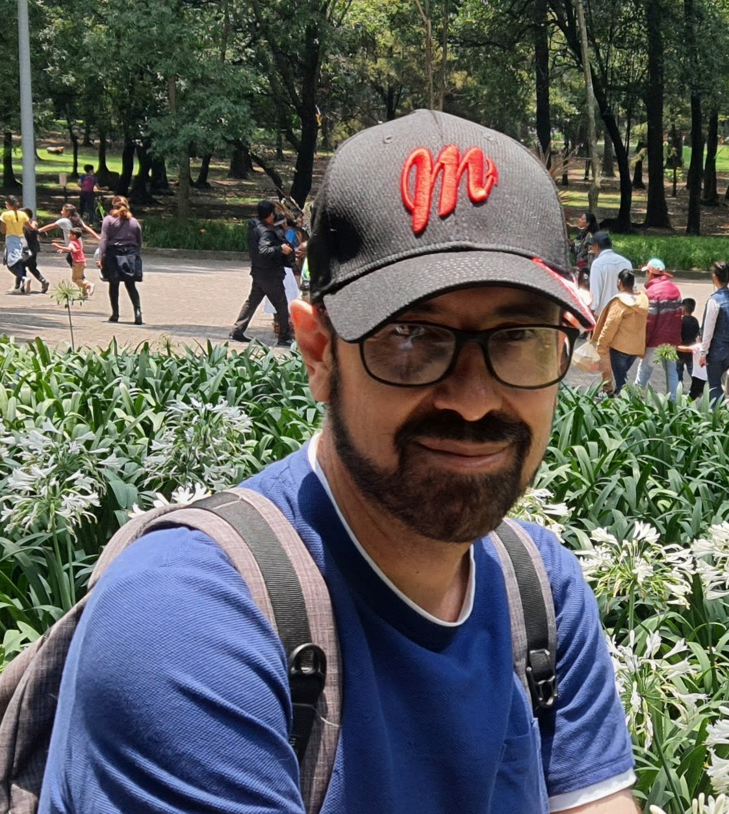
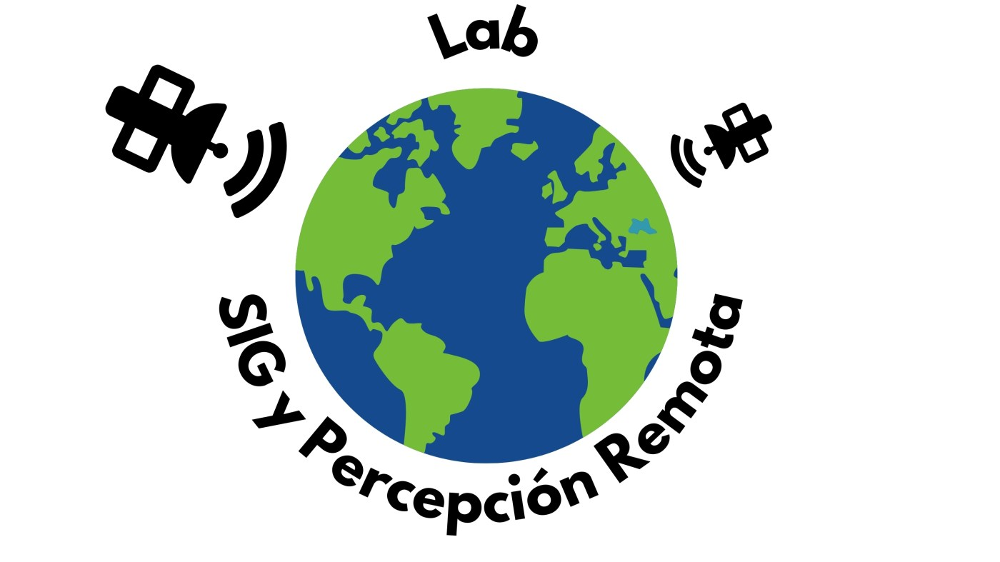

Estructura y diversidad forestal
Uso de la percepción remota y los análisis espaciales para monitorear la estructura de la vegetación y la composición de especies en bosques tropicales utilizando sensores pasivos y sensores activos.

CICY · Unidad de Recursos Naturales
Bosques tropicales, biodiversidad y paisaje.
Investigación desde el campo y el espacio.
Los trabajos de investigación de este laboratorio se enfocan en las siguientes líneas de investigación:
Uso de la percepción remota y los análisis espaciales para monitorear la estructura de la vegetación y la composición de especies en bosques tropicales utilizando sensores pasivos y sensores activos.
La ecología del paisaje: patrones, procesos, escala y efectos de la fragmentación del paisaje sobre las comunidades vegetales.
Monitoreo del Cambio de uso del suelo usando percepción remota.

